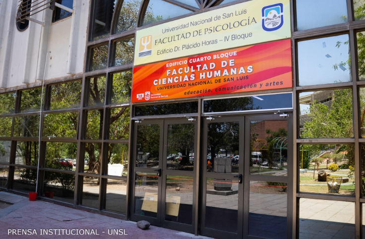
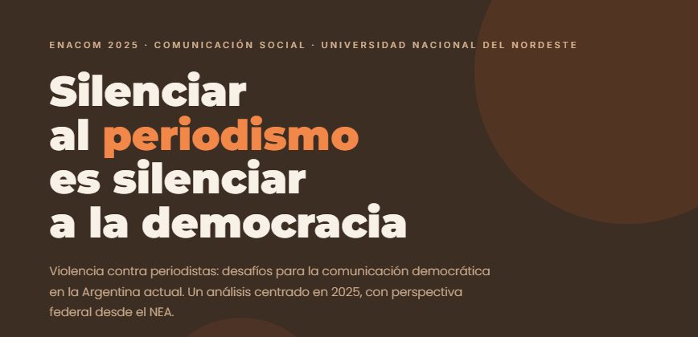

Crisis, comunicación y democracia
Este eje aborda la relación entre las crisis socioeconómicas y políticas, la comunicación pública, el periodismo, la circulación de información y los desafíos democráticos.
Un recorrido por los principales debates, ponencias y producciones del ENACOM 2025, realizado en San Luis.
Una mirada visual sobre las jornadas realizadas en la Facultad de Ciencias Humanas de la Universidad Nacional de San Luis.



Las fotografías se presentan con identificación de su fuente y autoría.
El recorrido reúne algunas de las principales problemáticas abordadas durante el ENACOM 2025.
Este eje aborda la relación entre las crisis socioeconómicas y políticas, la comunicación pública, el periodismo, la circulación de información y los desafíos democráticos.
Dos de los temas trabajados en nuestro recorrido sobre comunicación, periodismo y democracia.
Esta problemática aborda las formas de hostigamiento, censura, violencia simbólica y presión pública que afectan el trabajo periodístico y el derecho social a estar informado.

Algunas de las mesas y especialistas que participaron del ENACOM 2025.
Para una genealogía del campo: ¿de dónde venimos?
Carlos Mangone
María Soledad Segura
¿Qué hacer en tiempos de convergencia e inteligencias artificiales?
Martín Becerra
Flavia Costa
Javier Cristiano
¿Desde qué lugares pensar hoy la comunicación?
Sandra Valdettaro
Eva Da Porta
Alejandra Cebrelli
¿Qué hicimos con las herencias?
Víctor Lenarduzzi
Vanina Papalini
Carlos Rusconi
Poné a prueba lo que aprendiste durante el recorrido.
Utilizá estas herramientas para adaptar la experiencia de lectura según tus necesidades.
ENACOM 2025 invita a pensar el tiempo de la comunicación como una trama viva: memoria, presente, conflicto, tecnología y derecho a la información en diálogo.